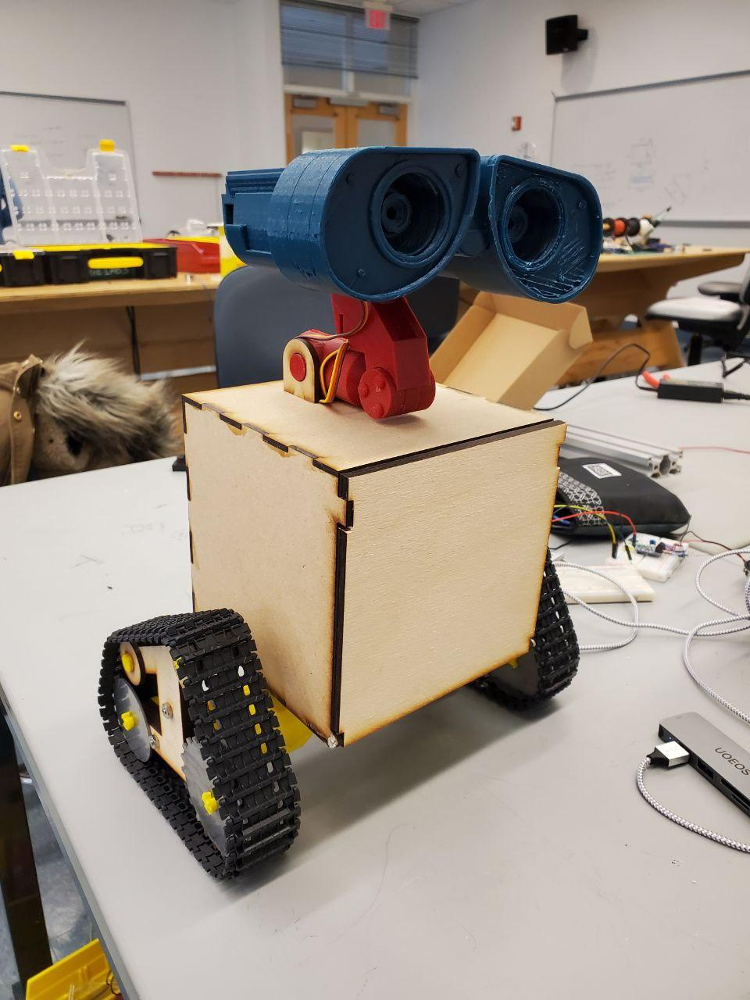

Process
Sprint 1
For Sprint 1, we were able to 3D print (PLA) and fully assemble Wall-E’s head and neck using the original CAD design scaled up to 1.72. The scaling was done in order to make the parts compatible with a standard size servo since we didn’t have the necessary sub-micro servos at that point. Both of the eyes were able to move individually based on a manually-inputted BPM.
Sprint 2

By Sprint 2 we had a rough version of the final mechanical assembly excluding the arms and the treads on the drivetrain. The electronic components were sitting inside the body for testing purposes, but they had still not been mounted yet. In terms of software progress, we were now able to move all 7 servos individually to a pre-set BPM. In addition, the microphone could detect the volume of audio input.
Sprint 3
For the final Sprint, we had the final mechanical assembly completed, which includes the drivetrain, treads, arms, body, head, and neck.

All 7 servos were now able to move in coordination to a pre-set BPM.
Using a metronome, we also had a functioning beat detection system. We also had software and electrical fully integrated.